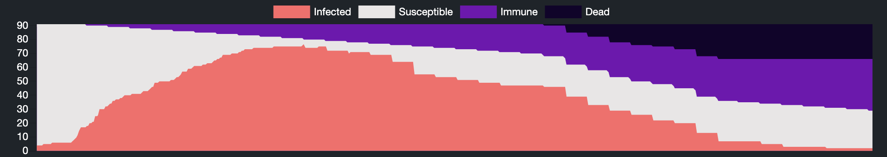
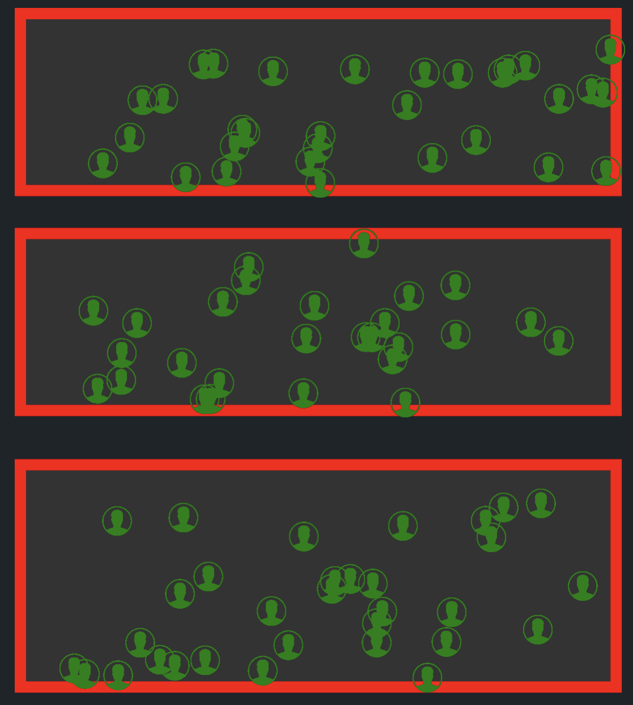

For the second challenge we will add more complexity to the simulator.
Firstly, this version of the simulator will include a hospital section like this one above. This will change the fatality rate from the previous challenge as it will now be broken down into the hospitalisation rate (the amount of infected people that have to visit the hospital) and the fatality rate which affects what percentage of people who visit the hospital will survive. A slider will also be introduced which controls the hospital capacity. It is important to keep an eye on this, because if the hospital becomes overrun, (i.e. there are more infected people in the hospital than the hospital's capacity) the fatality rate will automatically increase. The hospital will flash red if it is currently over capacity.
In this sense it is important to "flatten the curve" and ensure that the hospital does not become overwhelmed by a sudden surge of cases. You can easily track how quickly the disease is spreading by following the live chart below the simulator which will show you what proportion of the population is currently susceptible, infected, immune or dead.
Another significant new feature in this challenge is that the population will no longer move within one big area. The area will be broken up into 3 smaller 'communities' in which the people will be bound. However, depending on the travel restrictions, which you can control, the people will move in between the communities for school, work e.t.c. Below you can see a screenshot of the communities with the travel restrictions at their heighest. For this simulation, we will start with one infected person in each community.
The last two variables you must be aware of before attempting this challenge are Compliance and Vaccinations per Day. The compliance slider will dictate essentially how much the people within the simulation will do what they're told. If there is a low level of compliance, people might ignore the travel restrictions, or they may refuse to quarantine, thus increasing how rapidly the disease spreads.
Vaccinations per day will dictate how many people are vaccinated everyday. Once vaccinated the people will remain within the community but will not contract or transmit the virus. Vaccinated people will be referred to as 'Immune' will falls under the 'Removed' category in the aforementioned S.E.I.R. model, and will be displayed as purple. The simulations thus far have all assumed that having recovered from the virus, people are susceptible to catching it again. However this is often not the case, as with many viruses, the body builds up antibodies after recovering from the virus and becomes immune to catching it again. After you have completed this challenge, you can see how different things look when people are immune after recovery by heading to the sandbox area of the site and setting "Immune after Recovery" to Yes.
Your challenge is to keep deaths under 10% of the population. You have been allocated a €100,000,000 budget to try and suppress the virus and achieve this goal. Once your Accumulated Cost exceeds €100,000,000 the sliders will return to their original rates and you will no longer have any control, so it is important to use your budget frugally. By decreasing some costs below their initial value, you can reduce your daily costs however once money is spent you can not get it back. So for example, decreasing travel restricions below their initial 40% will subsidise the daily cost of vaccines, however if you have already spent the money on vaccines you can not recuperate it by having low travel restrictions or hospital capacity.
Remember these simulations are built on probability and with probability comes luck, so don't be afraid to try the same strategy again and see if it attains different results. Move the government variables above and below their initial value to get a feel for how the cost functions work and when you are ready hit start to begin the simulation. Don't forget, once the simulation has begun you can still alter the variables in real-time in response to what is happening in the simulation. The simulation will run until the disease has died out or until 100 days have passed.